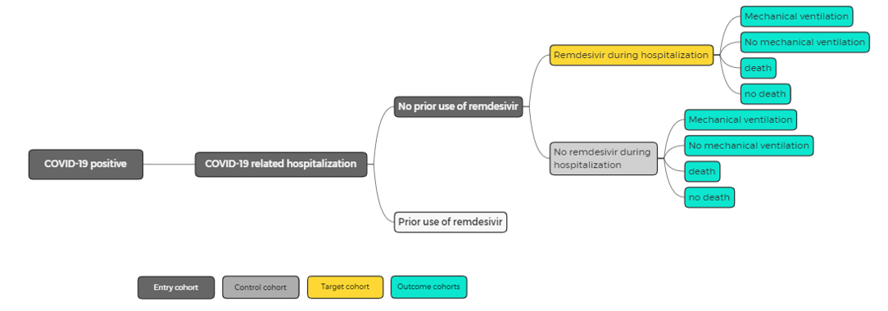

Top
Remdesivir
RESEARCH QUESTION: For patients with new COVID-19 infection, how does the addition of Remdesivir affect the outcomes (1) severe disease (indicated by mechanical ventilation) and (2) inpatient death?
Background
Remdesivir are currently under study as possible treatments for COVID-19. Before randomized clinical trials read out, a retrospective observational study can provide insight into the efficacy of this drug.
Study Design
The study examines the effect of initiation of Remdesivir in hospitalized COVID-19 patients on disease severity. The study involves two study groups (those receiving or not receiving Remdesivir), as depicted below:

Four outcomes are considered:
- Discharge without being placed on mechanical ventilation during stay
- Discharge after invasive mechanical ventilation (IMV) during stay
- Inpatient death without being placed on mechanical ventilation during stay
- Inpatient death after invasive mechanical ventilation (IMV) during stay
These outcomes correspond to increasing levels disease severity. The study uses mechanical ventilation as a proxy for severe but non-fatal disease. The outcome is retrospective over the entire patient visit and capture the worst severity of illness during the visit. For example:
- Patient is put on a ventilator (level 2) and then succumbs to the disease (level 3); the outcome is level 3 (death).
- Patient is temporarily put on a ventilator (level 2), then taken off the ventilator (level 1) and discharged; the outcome level 2.
Study Populations
Study Period: January 1, 2020 - Present
Index date: COVID-19-positive-date
- Entry Cohort:
- Age at COVID-19 Positive Date ≥ 18 years AND
- COVID-19 Positive Date after Jan 1, 2020 AND
- COVID-19 Related Hospitalization
- Target Cohort:
- Entry Cohort AND
- Inpatient Remdesivir Use AND NOT Prior Remdesivir Use [1]
- Control Cohort:
- Entry Cohort AND
- NOT Inpatient Remdesivir use AND NOT Prior Remdesivir Use
Outcome Definitions
Invasive Mechanical Ventilation (IMV):
- Invasive Mechanical Ventilation during COVID-19 Related Hospitalization OR
- Evidence of mechanical ventilation in other ICU documentation (e.g. ventilator mode change in ICU flowsheet)[8]
COVID-19 Inpatient Death:
Notes
[2] Study includes confirmed cases only
[3] A clinical diagnosis can be any diagnosis associated with an encounter, such as chief complaint, admitting diagnosis, working diagnosis, final diagnosis, or discharge diagnosis. It can also be a problem list entry.
[4] There may be local value sets/groupers for laboratory tests to detect SARS-CoV-2. Only PCR and NAAT tests with qualitative results should be considered for this purpose. See SARS-CoV-2 Qualitative Laboratory Test VS and SARS Related Qualitative Laboratory Test VS for details on inclusions and exclusions.
[5] The relevant date for laboratory test is the specimen collection data, not when results are reported. Laboratory order date can be used when specimen collection date is not available.
[6] This definition includes patients diagnosed with COVID-19 during a hospital visit even if the reason for hospitalization is not COVID-related; e.g., patients with undetected COVID-19 admitted for other reasons, and nosocomial COVID-19 infections
[7] Serves a confirmation that hospital admission is related to COVID-19 infection (as opposed to broken arm, etc.)
[8] ICU flowsheet data may not be accessible to all aggregators